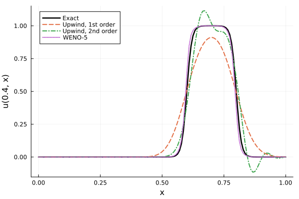
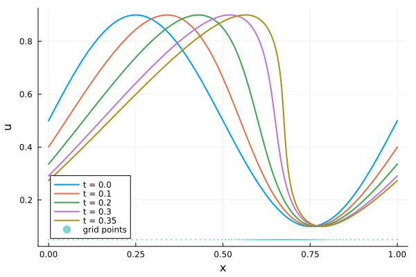
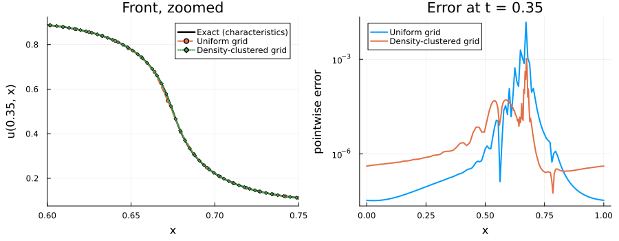

Resolving Steep Gradients: WENO on Non-Uniform Grids
Advection-dominated PDEs transport sharp features — fronts, pulses, shocks — across the domain. These problems are where naive finite difference schemes fail most visibly: low-order schemes smear the front into oblivion, while high-order linear schemes ring with spurious oscillations around it. This tutorial shows how to solve such problems with MethodOfLines.jl using the WENO scheme of Jiang and Shu, and how to combine it with non-uniform grids to concentrate resolution exactly where the solution needs it.
We will:
- Advect a steep pulse and watch first- and second-order upwind schemes fail in two different ways,
- Fix both failure modes with a one-keyword change:
advection_scheme = WENOScheme(), - Build a custom non-uniform grid from a resolution density function and pass it directly to
MOLFiniteDifference, - Use that grid to resolve the steepening front of the inviscid Burgers equation, on a periodic domain, at a fraction of the cost of uniform refinement,
- Verify the order of accuracy of the non-uniform WENO discretization with the method of manufactured solutions.
Why linear schemes are not enough
Consider the linear advection equation, the simplest PDE that transports a profile without changing its shape:
\[\frac{\partial u}{\partial t} + a \frac{\partial u}{\partial x} = 0, \qquad u(0, x) = u_0(x),\]
whose exact solution is simply the translated initial condition, $u(t, x) = u_0(x - a t)$.
Godunov's theorem states that any linear scheme that does not generate new extrema (i.e. is monotone) can be at most first-order accurate. This leaves an unpleasant choice: first-order schemes are monotone but extremely diffusive, while higher-order linear schemes are more accurate in smooth regions but oscillate near steep gradients. The escape route is to make the scheme nonlinear: let the stencil weights depend on the solution itself, so that the scheme avoids differencing across a discontinuity. This is exactly what WENO (Weighted Essentially Non-Oscillatory) schemes do.
Setting up a steep-pulse advection problem
We advect a pulse with steep tanh fronts at speed $a = 1$ across the unit interval. The pulse is technically smooth, but its fronts are steep enough (width $\sim 0.02$) to behave like discontinuities on any grid of moderate size.
using ModelingToolkit, MethodOfLines, OrdinaryDiffEq, DomainSets, Plots
using OrdinaryDiffEqSSPRK: SSPRK33
@parameters t x
@variables u(..)
Dt = Differential(t)
Dx = Differential(x)
a = 1.0
w = 0.02 # front width
pulse(x) = 0.5 * (tanh((x - 0.2) / w) - tanh((x - 0.4) / w))
u_exact(x, t) = pulse(x - a * t)
eq = Dt(u(t, x)) ~ -a * Dx(u(t, x))
bcs = [u(0.0, x) ~ pulse(x),
u(t, 0.0) ~ 0.0,
u(t, 1.0) ~ 0.0]
domains = [t ∈ Interval(0.0, 0.4),
x ∈ Interval(0.0, 1.0)]
@named pdesys = PDESystem(eq, bcs, domains, [t, x], [u(t, x)])\[ \begin{align} \frac{\mathrm{d}}{\mathrm{d}t} ~ u\left( t, x \right) &= - \frac{\mathrm{d}}{\mathrm{d}x} ~ u\left( t, x \right) \end{align} \]
First attempt: upwind schemes
The default advection scheme in MethodOfLines is the first-order upwind scheme. Let's discretize with a grid step of $1/128$ and solve, once with the first-order and once with the second-order upwind scheme:
N = 128
dx_uniform = 1.0 / N
function solve_uniform(scheme; solver = Tsit5(), kwargs...)
disc = MOLFiniteDifference([x => dx_uniform], t; advection_scheme = scheme)
sys, tspan = symbolic_discretize(pdesys, disc)
prob = ODEProblem(mtkcompile(sys), nothing, tspan)
return solve(prob, solver; saveat = 0.4, kwargs...)
end
sol_upwind1 = solve_uniform(UpwindScheme())
sol_upwind2 = solve_uniform(UpwindScheme(2))The fix: WENOScheme
Switching to WENO is a one-keyword change. WENO-5 blends three candidate 3-point stencils with weights based on smoothness indicators $\beta_k$: in smooth regions the weights approach the optimal linear ones (fifth-order accuracy on uniform grids), while near a steep gradient the weights of the stencils that cross the front collapse to essentially zero, suppressing oscillations at the source. The parameter epsilon (default 1e-6) guards the weights against vanishing denominators; problems with much smaller solution magnitudes may benefit from a smaller value:
WENOScheme(; epsilon = 1e-6)Since the semi-discretization is nonlinear and advection-dominated, a Strong-Stability-Preserving (SSP) time integrator such as SSPRK33 is the natural companion: it preserves the non-oscillatory property of the spatial scheme under a CFL restriction on the time step.
sol_weno = solve_uniform(WENOScheme(); solver = SSPRK33(),
dt = 0.4 * dx_uniform / a, adaptive = false)Now compare all three against the exact solution at $t = 0.4$:
xs = sol_upwind1[x]
plt = plot(xs, u_exact.(xs, 0.4); label = "Exact", color = :black, lw = 2.5,
xlabel = "x", ylabel = "u(0.4, x)", legend = :topleft)
plot!(plt, sol_upwind1[x], sol_upwind1[u(t, x)][end, :];
label = "Upwind, 1st order", lw = 2, ls = :dash)
plot!(plt, sol_upwind2[x], sol_upwind2[u(t, x)][end, :];
label = "Upwind, 2nd order", lw = 2, ls = :dashdot)
plot!(plt, sol_weno[x], sol_weno[u(t, x)][end, :];
label = "WENO-5", lw = 2, ls = :dot)
The two linear schemes fail exactly as Godunov's theorem predicts: the first-order upwind solution is monotone but heavily smeared, while the second-order one is sharper but rings around both fronts (over- and undershoots of magnitude $\sim 0.1$). WENO-5 tracks the fronts sharply, and its largest overshoot is at the $10^{-4}$ level — three orders of magnitude smaller.
Non-uniform grids: resolution where it matters
On a uniform grid, sharpening a front further means refining everywhere. But MOLFiniteDifference also accepts, in place of a step size, an arbitrary strictly increasing vector of grid points — a non-uniform rectilinear grid. When a grid vector is supplied together with WENOScheme(), MethodOfLines automatically switches to a node-centered non-uniform WENO-5 reconstruction that works directly with the physical grid coordinates, using one-sided reconstructions at physical boundaries.
A convenient way to design such a grid is to specify a resolution density $\rho(x) > 0$ — "how many points per unit length do I want here?" — and place the grid points at uniform quantiles of its normalized cumulative integral:
function grid_from_density(a, b, n, ρ)
xs = range(a, b, length = 5001)
cdf = cumsum(ρ.(xs))
cdf = (cdf .- cdf[1]) ./ (cdf[end] - cdf[1])
levels = range(0, 1, length = n)
xg = [xs[searchsortedfirst(cdf, l)] for l in levels]
xg[1] = a
xg[end] = b
return xg
endBecause $\rho$ is strictly positive and the quantile levels are far coarser than the sampling lattice, the resulting point vector is strictly increasing, as MOLFiniteDifference requires. (MethodOfLines also exports chebyspace for constructing Chebyshev, i.e. boundary-clustered, grids — see Non-Uniform Rectilinear Grids.)
Where should the points go? For that we need a problem whose steep feature lives at a known, fixed location — which brings us to the classic showcase for both WENO and grid clustering.
A nonlinear showcase: the inviscid Burgers equation
The inviscid Burgers equation
\[\frac{\partial u}{\partial t} + u \frac{\partial u}{\partial x} = 0\]
is the canonical model of nonlinear wave steepening: each point of the profile travels at its own speed $u$, so fast regions overtake slow ones and a smooth initial condition steepens into a shock in finite time. For an initial profile $u_0$, the gradient blows up at $t_s = -1/\min_x u_0'(x)$. The nonlinear advection term $u\,\partial_x u$ can also be discretized by the sign-aware upwind scheme, but near steep gradients WENO's adaptive stencils are the robust choice; more generally, terms in which first-order derivatives multiply one another do require WENOScheme in MethodOfLines (see Advection Schemes).
We take $u_0(x) = 0.5 + 0.4\sin(2\pi x)$ on the periodic unit interval, for which $t_s = 1/(0.8\pi) \approx 0.4$, and integrate up to $t = 0.35$, just before shock formation. The characteristics tell us where the shock forms: the steepest point of the profile starts at $x = 0.5$ and drifts with the mean speed $0.5$, arriving near $x \approx 0.675$ at $t = 0.35$. So we place a Gaussian bump of resolution density right there. Periodic boundary conditions are fully supported on non-uniform grids with WENO — stencils that wrap around the boundary are evaluated with the exact physical coordinates of the connected grid, so no accuracy is lost at the seam.
u0_burgers(x) = 0.5 + 0.4 * sin(2π * x)
eq_burgers = Dt(u(t, x)) ~ -u(t, x) * Dx(u(t, x))
bcs_burgers = [u(0.0, x) ~ u0_burgers(x),
u(t, 0.0) ~ u(t, 1.0)]
domains_burgers = [t ∈ Interval(0.0, 0.35),
x ∈ Interval(0.0, 1.0)]
@named pdesys_burgers = PDESystem(eq_burgers, bcs_burgers, domains_burgers,
[t, x], [u(t, x)])
ρ(x) = 1 + 4 * exp(-(x - 0.675)^2 / (2 * 0.08^2)) # 5x resolution at the shock site
x_clustered = grid_from_density(0.0, 1.0, N + 1, ρ)
disc_burgers = MOLFiniteDifference([x => x_clustered], t;
advection_scheme = WENOScheme())
sys, tspan = symbolic_discretize(pdesys_burgers, disc_burgers)
prob_burgers = ODEProblem(mtkcompile(sys), nothing, tspan)
dt_burgers = 0.3 * minimum(diff(x_clustered)) / maximum(u0_burgers.(x_clustered))
sol_burgers = solve(prob_burgers, SSPRK33(); dt = dt_burgers,
saveat = [0.0, 0.1, 0.2, 0.3, 0.35], adaptive = false)
xb = sol_burgers[x]
ub = sol_burgers[u(t, x)]
plt = plot(; xlabel = "x", ylabel = "u", legend = :bottomleft)
for (i, T) in enumerate(sol_burgers[t])
plot!(plt, xb, ub[i, :]; label = "t = $(round(T, digits = 2))", lw = 2)
end
scatter!(plt, x_clustered, fill(0.05, length(x_clustered));
label = "grid points", ms = 1.2, msw = 0, alpha = 0.5)
plt
The front steepens dramatically as $t \to t_s$, yet the solution remains within the bounds of the initial condition — no spurious overshoots appear ahead of or behind the forming shock. Note that the time step of the explicit SSP integrator is restricted by the smallest cell of the grid; that is the price of local refinement.
How much did the clustering buy us? Before shock formation the exact solution is given implicitly by the characteristics, $u = u_0(x - u t)$, which we can evaluate by fixed-point iteration and compare against a uniform grid with the same number of points, zoomed into the front:
function burgers_exact(x, t; iters = 400)
uex = u0_burgers(x)
for _ in 1:iters
uex = u0_burgers(x - uex * t)
end
return uex
end
disc_uni = MOLFiniteDifference([x => 1.0 / N], t; advection_scheme = WENOScheme())
sys, tspan = symbolic_discretize(pdesys_burgers, disc_uni)
prob_uni = ODEProblem(mtkcompile(sys), nothing, tspan)
sol_uni = solve(prob_uni, SSPRK33(); dt = 0.3 / N / 0.9,
saveat = [0.0, 0.35], adaptive = false)
xfine = range(0.6, 0.75, length = 400)
p1 = plot(xfine, burgers_exact.(xfine, 0.35); label = "Exact (characteristics)",
color = :black, lw = 2.5, xlabel = "x", ylabel = "u(0.35, x)",
xlims = (0.6, 0.75), legend = :topright, title = "Front, zoomed")
plot!(p1, sol_uni[x], sol_uni[u(t, x)][end, :]; label = "Uniform grid",
lw = 2, ls = :dash, marker = :circle, ms = 2.5)
plot!(p1, xb, ub[end, :]; label = "Density-clustered grid",
lw = 2, ls = :dot, marker = :diamond, ms = 2.5)
err_uni = abs.(sol_uni[u(t, x)][end, :] .- burgers_exact.(sol_uni[x], 0.35))
err_clu = abs.(ub[end, :] .- burgers_exact.(xb, 0.35))
p2 = plot(sol_uni[x], max.(err_uni, 1e-16); label = "Uniform grid", lw = 2,
yscale = :log10, xlabel = "x", ylabel = "pointwise error",
legend = :topleft, title = "Error at t = 0.35")
plot!(p2, xb, max.(err_clu, 1e-16); label = "Density-clustered grid", lw = 2)
plot(p1, p2; layout = (1, 2), size = (900, 350), bottom_margin = 5Plots.mm,
left_margin = 5Plots.mm)
With an identical budget of grid points, the clustered grid places about five times more of them across the front, and the maximum error near the front drops by more than an order of magnitude (in this run, from $1.5 \times 10^{-2}$ on the uniform grid to $1.1 \times 10^{-3}$ on the clustered one).
Verifying accuracy: manufactured-solution convergence
Sharpness alone is not enough — we should verify that the non-uniform WENO discretization converges at the expected rate. We use the method of manufactured solutions: pick a smooth exact solution of the advection equation, impose it as initial and boundary data, and measure the error under grid refinement. The nominal spacing $h = (b - a)/(N - 1)$ serves as the refinement parameter; refining a $\sinh$-stretched grid at fixed stretching intensity $\beta$ is self-similar, so the estimated order of convergence (EOC) is well-defined.
L = 2π
u_mms(x, t) = sin(2π * (x - t) / L) + 0.15 * sin(4π * (x - t) / L)
function mms_error(xgrid; tf = 0.05)
x0, xL = xgrid[1], xgrid[end]
eq_mms = Dt(u(t, x)) ~ -Dx(u(t, x))
bcs_mms = [u(0.0, x) ~ u_mms(x, 0.0),
u(t, x0) ~ u_mms(x0, t),
u(t, xL) ~ u_mms(xL, t)]
domains_mms = [t ∈ Interval(0.0, tf), x ∈ Interval(x0, xL)]
@named pdesys_mms = PDESystem(eq_mms, bcs_mms, domains_mms, [t, x], [u(t, x)])
disc = MOLFiniteDifference([x => xgrid], t; advection_scheme = WENOScheme())
sys, tspan = symbolic_discretize(pdesys_mms, disc)
prob = ODEProblem(mtkcompile(sys), nothing, tspan)
dt = 0.01 * minimum(diff(xgrid)) # tiny dt isolates the spatial error
sol = solve(prob, SSPRK33(); dt, saveat = [0.0, tf], adaptive = false)
xg = sol[x]
err = sol[u(t, x)][end, :] .- u_mms.(xg, tf)
weights = [diff(xg); xg[end] - xg[end - 1]] # cell-width weighted L2 norm
return sqrt(sum(weights .* abs2.(err)) / sum(weights .* abs2.(u_mms.(xg, tf))))
end
function sinh_grid(a, b, n; β = 4.0) # center-clustered stretched grid
ξ = range(-1, 1, length = n)
xg = collect(a .+ (b - a) .* (sinh.(β .* ξ) ./ sinh(β) .+ 1) ./ 2)
xg[1] = a
xg[end] = b
return xg
end
Ns = [81, 161]
hs = L ./ (Ns .- 1)
errs_uniform = [mms_error(collect(range(0.0, L, length = n))) for n in Ns]
errs_stretched = [mms_error(sinh_grid(0.0, L, n)) for n in Ns]
eoc(errs) = log(errs[1] / errs[2]) / log(hs[1] / hs[2])
println("uniform: errors = ", round.(errs_uniform, sigdigits = 3),
", EOC = ", round(eoc(errs_uniform), digits = 2))
println("stretched: errors = ", round.(errs_stretched, sigdigits = 3),
", EOC = ", round(eoc(errs_stretched), digits = 2))uniform: errors = [1.63e-6, 1.13e-7], EOC = 3.85
stretched: errors = [4.55e-5, 8.35e-6], EOC = 2.45Note that both grids here are passed as explicit point vectors, so both are discretized with the node-centered non-uniform reconstruction, which is formally 4th order accurate in smooth regions. On the equally spaced grid the observed order matches this rate closely; on the strongly stretched grid — $\beta = 4$ makes the outermost cells about $\cosh(4) \approx 27$ times wider than the central ones — the scheme remains high-order, though it is still pre-asymptotic at these modest resolutions and shows a reduced rate.
Limitations
WENOSchemediscretizes first-order spatial derivatives only; higher odd-order derivatives are unsupported with this scheme. Even-order terms such as diffusion are handled by the standard centered schemes and may be freely mixed in the same equation.- With an explicit SSP integrator, the time step is limited by the smallest cell of a non-uniform grid.
- WENO is emitted in array (slice) form on both uniform and non-uniform grids, including periodic non-uniform grids. See Discretization.
- Periodic and interface boundary conditions are supported on non-uniform grids for first-order derivatives; systems with higher-order derivatives across a mismatched-grid interface are rejected at discretization time. See Boundary Conditions and Advection Schemes.
References
- G.-S. Jiang and C.-W. Shu, Efficient Implementation of Weighted ENO Schemes, Journal of Computational Physics 126 (1996).
- The non-uniform WENO-5 reconstruction follows the node-centered formulation specified on pages 8–9 of this document.